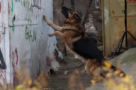
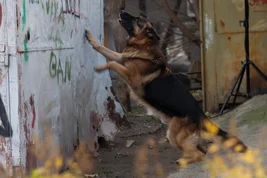
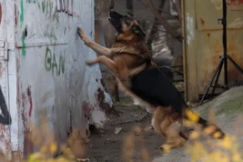

Съёмки Сериала «Пёс»
В первый раз сериал «Пёс» был запущен на НТВ в мае 2016 года. С того времени в эфир телевизионного канала
вышло уже три сезона проекта. Его съёмки продолжаются без малого 5 лет: за этот период времени было отснято
108 часовых серий.
Главную роль исполняет Никита Панфилов — довольно известный
российский актёр, играющий в фильмах и театре. Что касается его четвероногих друзей, то в начальных сезонах
главную роль исполнила немецкая овчарка по
прозвищу Граф. В последних двух сезонах в главной роли выступил
родной сын Графа — Мухтар.
Пёс Граф успел сняться в 200 эпизодах, что говорит об его солидном опыте киноактёра. Его сын Мухтар —
менее опытный в этом плане, поскольку он в первый раз появился только в третьем сезоне. Никита Панфилов
долгое время страдал из-за сложных взаимоотношений с новым псом: Мухтар не понимал его
самых элементарных команд и в принципе отказывался слушаться.
И тем не менее кинологи сделали свою работу профессионально и пёс начал слушаться актёра. Самое
интересное, что отец Графа — более агрессивен, чем сын. Старшая немецкая овчарка успела покусать
пятнадцать человек со съёмочной площадки.
За Мухтаром же не было замечено агрессии к людям — наверняка характером пошёл в маму. У обоих псов рабочий
день длился, как у детей — не больше четырёх часов.
О Проекте:
Сюжет проекта происходит в выдуманной местности, которая называется Ганалупа.
Паспорта и номера автомобилей персонажей — тоже вымышленные и не имеют ничего общего с реальностью, Все
адреса в картине — несуществующие, причём они носят имена участников съёмочной площадки. Связано это с тем,
что по мнению кинологов не рекомендуется эксплуатировать животных как людей в трудовом
смысле.
Если смотреть сериал внимательно и вдумчиво, то можно обратить внимание на знакомо звучащие переулок
Жонина, улицу Каптана и Роднянского.
Главный герой сериала «Пёс» — не такой шаблонный, какими бывают персонажи в классических детективных
фильмах. Максим не является рэмбо-мужиком, выбивающих доказательства и улики из других людей. Он — самый
обычный парень, у которого огромные жизненные проблемы и неурядицы: алкогольная зависимость,
из-за которой герой упал на дно. При этом Максим старается вести себя достойно, не применять силовых методов
и использовать в любых сложных
ситуациях свой ум и харизму.
Вообще все персонажи в проекте «Пёс» полноценно выполняют свои задачи. Они могут очень охотно поддерживать
Максима, либо довольствоваться своими шкурными интересами и иногда даже ставить палки в колёса главному
герою. Как уже описывалось на другой странице, бывшая жена Лена
бросила
Максима и ушла к его приятелю Алексею, но даже после этого ребята не перестали быть друзьями.
Причём ушедшая от главного героя жена работает в химической лаборатории в одном отделе полиции с Максимом
и Алексеем. Забавный факт, но между Максом и Леной всё ещё есть огонёк, и всё же она его бросила. Кстати,
если говорить об отрицательных персонажах, то вновь сразу же приходит на ум продажный Гнездилов —
клоун и просто ходячая комедия. Он и является самым сумасшедшим персонажем в сериале, что придаёт «Псу» ещё
больше комедийности.
Как уже указывалось нами выше, роль Максима Максимова сыграл российский актёр Никита Панфилов. Сам актёр утверждает, что его персонаж и Пёс постоянно
конкурируют между собой и пытаюсь выяснить — кто из
них является главным героем. Самое необычное, что приходилось делать Панфилову на съёмках этого сериала —
это водить громадный
внедорожник и ещё кучу другого необычного транспорта, фигурирующего в сценарии.
Актёр никогда не имел опыта вождения полноценного автобуса, забитого живыми людьми, и это действительно
оказалось ему в новинку. В целом Панфилов открыл на съёмках сериала «Пёс» для себя много нового. В проекте
было просто невероятное
количество драк и с этим актёр тоже столкнулся впервые. Именно из-за большого числа масштабных потасовок
актёру приходилось за кадром наносить очень много грима.
Оно и неудивительно, ведь Максим Максимов довольно часто в сериале ходил побитый. Панфилов заявил, что эта
роль — одна из самых лучших в его карьере — особенно в плане опыта.
Места съёмок сериала «Пёс»:
В какой стране снят сериал «Пёс»? В Украине, при этом премьера первого сезона прошла на украинском канале
ICTV в 15-ом году, а в Российской Федерации сериал показали только весной 2016-го года на канале «НТВ».
Премьеры второго, третьего, четвёртого и пятого сезона также состоялись на украинское телевидении в 16,
17, 18 и 19-ом году.
В каком городе снимали сериал «Пёс», первый сезон? Данный проект снимался в Киеве, при этом главную роль
исполнил российский актёр Никита Панфилов.Создатели сериала
сказали, что для них не имеет значение откуда актёр, ведь их совершенно не интересуют
политические игры.
Украинские зрители тоже довольно тепло восприняли москвича, причём это наглядно могут подтвердить высокие
рейтинги сериала в братской стране. В каком бы городе или стране не снимали «Пёс», проект стал очень
популярным как на «НТВ», так и на всех
остальных каналах, где его показывали.
Кстати, рейтинг сериала показал настолько впечатляющие результаты, что даже одно время в поисковик Google
украинские пользователи больше всего искали информацию по «Псу».
Если с местом съёмки первого сезона всё понятно, то тогда где снимали сериал «Пёс» 1, 2, 3, 4, 5? Ответ на
этот вопрос предельно элементарный и не требует никаких объяснений. Съёмки всех сезонов сериала «Пёс» также
проходили в Украине. Место действия сюжета — вымышленный город
Ганалупа (как и в первом сезоне сериала).
Создателям сериала было не занимать фантазии, поэтому они не стали использовать имя родного города и
названия киевских улочек. Придумав новую местность, они создали свою вселенную с харизматичными и комичными
персонажами. Кстати, очень часто зрители задают вопрос «в каком городе снимали сериал Пёс-2?». Ответом также является
Киев.
Кадры:

 
